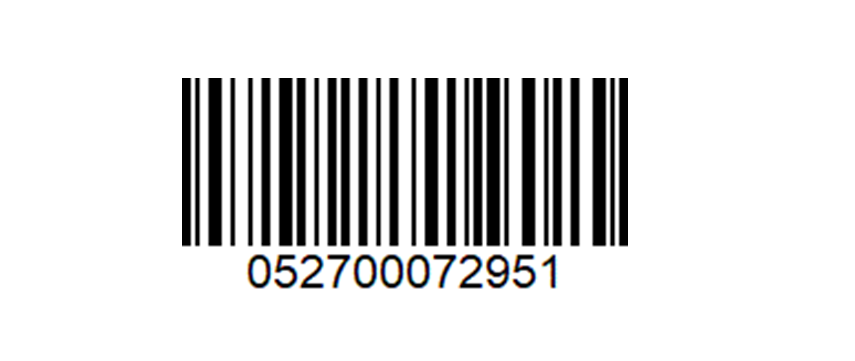

System requirements
Although WMS workin is web-based and does not require any installation, there are some minimum system requirements that should be met.
Browser
WMS Worker is supported in the browsers shown in the following table.
| Browser | Version |
|---|---|
| Google Chrome, including Android | Current* |
*Current refers to the latest version of the browser.
OS
The minimmum requirement of the operational system is Android 8.0 (Oreo) or higher.
Devices
Mobile RF handheld devices
Requirements:
- Minimum RAM: 1 GiB, recommended: 2 GiB or higher
- Minimum Processor: 1 GHz
Recommendations:
The manufacturers device software should allow to configure following scanner settings on the device:
- Convert barcode input via scan head or camera to text
- Possibility to give an automatic ENTER after a scan
- Identifies GS1-128/EAN128 barcodes (when such is used in the warehouse)
Note
Please consult with both your implementatorand and device provider before purchasing a device. They will help you determine the specific requirements that would be most appropriate for the specifics of your business.
Compatible devices
The following Android devices have been tested:
- Zebra MC9300
- Zebra TC77
- M3 Mobile SL20
Note
Other models may work as well when meeting the other requirements in this document but cannot be guaranteed.
Test device compatibility
You have a mobile RF handheld devices and you want to make sure it is compatible with WMS Worker?
We've created a test environment where you can test your device and the WMS Worker in action.
Тo test your device, just follow these steps:
Open the following link in the browser of the mobile terminal https://testdb.my.erp.net/cl/wmsworker
user: admin
password: 123Select Orders
Select Warehouse Order 0000000011
Click Open => the first line is atomatically selected.
Click Execute
Scan the Location

- Scan the Product

Enter the lot "AL00001" code using the keyboard or select it from the drop-down list.
Enter the quantity 5 PCS using the keyboard.
Press Next
You have successfully executed a warehouse order line with your device!